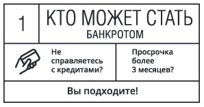
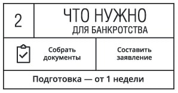
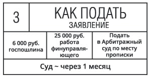
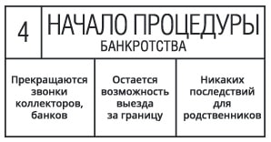
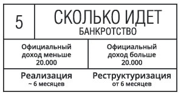
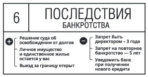
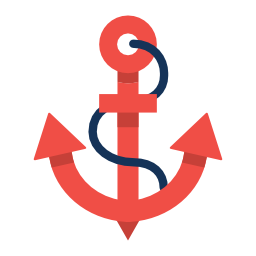

Горячая линия в Ростове-на-Дону:
+7 (918) 890-20-68
Банкротство ФизЛиц
Наше юридическое агенство занимается оказанием юридической помощи по процессу банкротства должников, не имеющих финансовых возможностей производить оплаты по денежным обязательствам перед банковскими либо иными финансовыми структурами.
Производим официальный процесс банкротства (через суд) всех лиц, имеющих задолженность перед финансовой структурой с суммой 500 тысяч рублей и более. Только у нас вы можете списать долги и с меньшей суммой!
Банкротство ФизЛиц






Наши преимущества

Мы занимаемся списанием долгов для физических и юридических лиц уже долгое время. Накопили достаточно опыта и связей. В наших силах списать любую сумму. Больше или меньше законных пятиста тысяч. Мы гарантируем результат. Мы можем многое. Позвоните нам и избавьтесь от юридической кабалы.
Помогаем нашим клиентам избежать мошенников и дилетантов.
Содействуем внедрению лучших практик в проведении процедур личного банкротства.